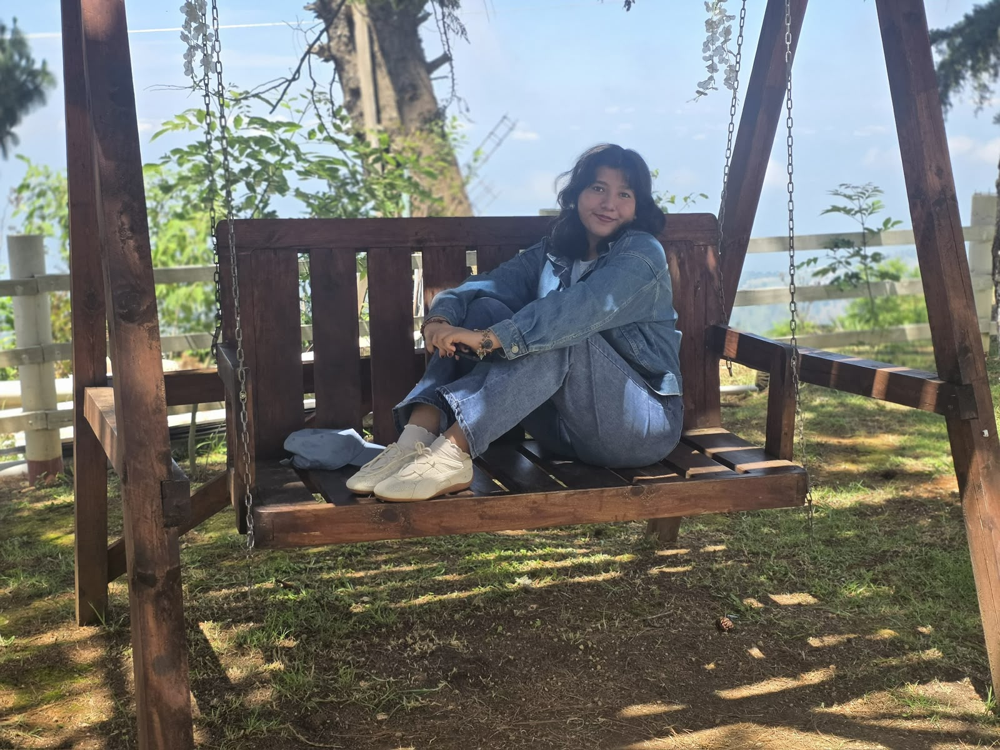

>_ 01
>$ whoami
Estudiante de TI. Mich
Me gusta el diseño y aprender cosas nuevas.
- HTML5
- CSS3
- JavaScript
- Node.js
- Git
- REST APIs
01 · sobre mí
Quién soy y qué hago
Mi enfoque técnico
Creo que antes de elegir una paleta de colores o trazar el primer componente, lo más importante es entender para quién estamos diseñando. Mi proceso siempre comienza escuchando y analizando las necesidades del usuario, porque un buen producto nace de la empatía antes que de lo visual.
Priorizo crear interfaces que se sientan naturales. Busco ese equilibrio perfecto donde la navegación es tan intuitiva y fácil de usar que fluye por sí sola, pero acompañada de un diseño estético que respira la verdadera esencia del proyecto. Para mí, la funcionalidad y la belleza siempre deben ir de la mano.
Cuido cada pequeño detalle para que la experiencia final se sienta suave, cálida y muy creativa. Ya sea estructurando una idea o dándole vida en el código, mi objetivo es entregar plataformas que no solo resuelvan un problema, sino que conecten con las personas de una manera genuina.

>_ 02
Backend
>_ 03
DevOps / Automatización
>_ 04
Herramientas
02 · proyectos
Cosas que he construido
Selección de proyectos donde aplico arquitectura limpia, buenas prácticas y lo que he ido aprendiendo.
03 · desde el blog
Últimos artículos
Los dos posts más recientes. Todo el contenido en el blog.